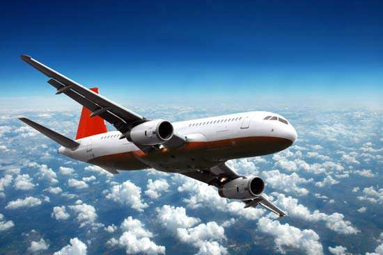
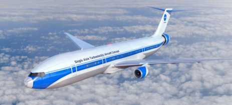

Você já olhou para cima para ver um daqueles gandes pássaros de metal, voando em alta velocidade e passando por todos os lugares.
fonte: googleO avião é alvo de interesse de muitos curiosos que se perguntam: como algo tão grande e pesado consegue voar. Bom, vamos descobrir.
fonte: googlePara os aviões voarem eles precisam da contribuição de 4 fatores: sustentação, arrasto, peso e tração. Usando seu motor potente e suas asas com formato especial, os aviões conseguem colocar esses fatores ao seu favor. Quando ele corre, o ar se desloca pelas suas asas que com seu formato mexem com a pressão do ar ao seu redor. E é assim que esses gigantes de ferro voam.
Informação: passageiro de primeira